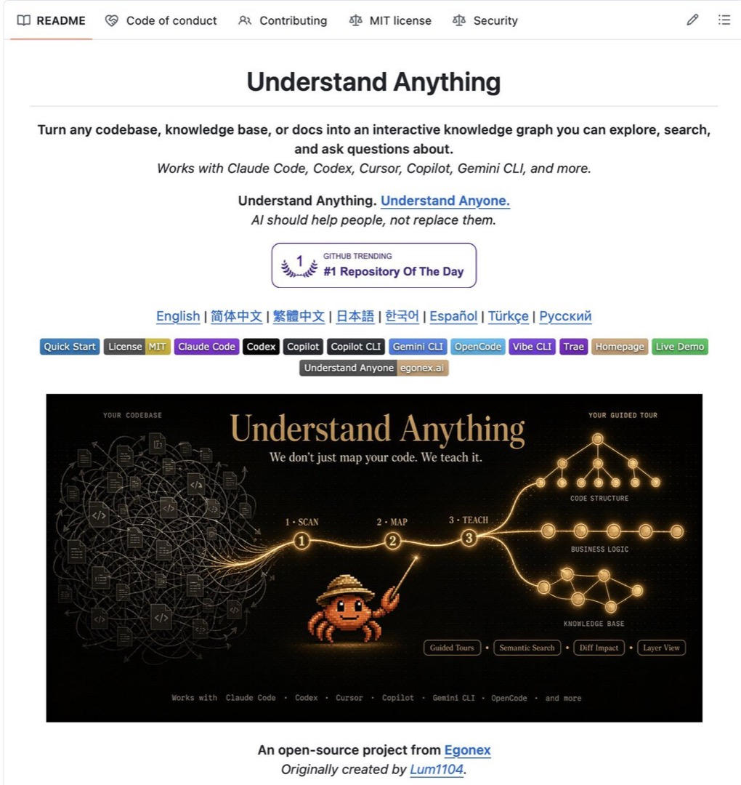
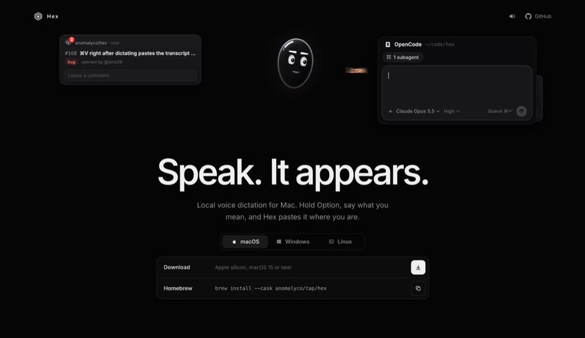
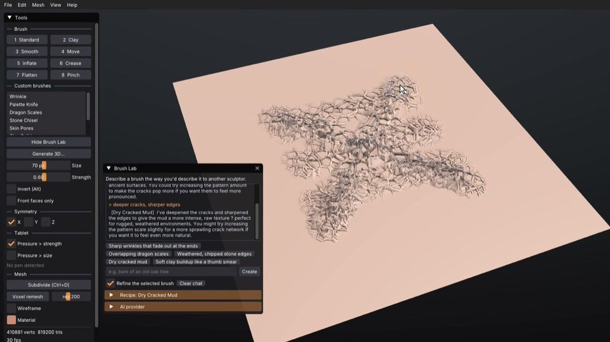

本期速览
01 任意代码库转交互知识图谱
02 Grok Bot 监控出海新站需求信号
03 Apple 开放Siri AI集成接口
06 TerraTransfer++纯视觉规划
07 币安遭四个月供应链钓鱼渗透
09 ChatGPT广告每次访问收益低64%
01｜任意代码库转交互知识图谱
来源（X） · @wanerfu · 2026-11-02 16:26
他叫林宇翔，GitHub 账号 Lum1104。
简介里写着“目前在搞 LLM agent”。
几个月前，他的一个副业项目 Understand-Anything 只有 655 颗星。这东西是个插件，能把任意代码库变成一张可交互的知识图谱。
然后一下就爆了。
项目被 Egonex（Infinite Universe, Inc.）接手，从个人仓库变成了公司背书的正式发布。翻译成了简体中文、繁体中文、日文、韩文、俄文和西班牙文。还上了 Trendshift。
56400 颗星之后，它正在变成几乎所有 AI 编程工具默认的代码理解插件——Claude Code、Codex、Cursor、GitHub Copilot、Gemini CLI、OpenCode、OpenClaw、Antigravity、Pi Agent、Vibe CLI、Hermes、Cline、KIMI CLI 和 Trae。
这插件干的事：
→ 用 Tree-sitter 解析代码库的结构
→ LLM agent 补上语义
→ 给每个文件、函数、类建一张知识图谱
→ 打开一个可拖动、缩放、搜索的交互面板
→ 生成引导路线，让你按正确顺序读懂 20 万行的代码库
→ 提交前告诉你这次改动会弄坏什么
→ 通过 post-commit hook 在每次提交后自动更新
https://github.com/Egonex-AI/Understand-Anything

02｜Grok Bot 监控出海新站需求信号
来源（X） · @0xlangeai · 2026-11-04 08:13
快照里 890 个产品，单日新上架 583 个。AI 图视频 210，效率办公 158，开发者工具 142。video generator 一天挤进 16 个，coding agents 13 个，名字带 claude code 的 10 个。
他不把这当竞品监控，当需求监控。开发者愿意注册域名、挂支付，说明在下注什么需求。盯四个信号：
1. 域名是不是踩在 generator、remover、video 这类需求词上
2. WHOIS / RDAP 看是不是新注册，还是老站换皮
3. X 晒单、TrustMRR 有没有真成交
4. 交付轻不轻，两天能出 MVP 说明口子够窄
搭法也很直：130 个公开来源（sitemap 差分 60 个最稳）→ 两道去重 → 模型抽字段 → 剥掉目录站跳转摸到真官网 → 查 EMD 和注册时间 → 再扫 X 24 小时晒收入。墙上时钟截止加看门狗，保证八点前必有表。
同一份 583 条名单，抄站会撞车；抄需求、抄落地页怎么切词，才离钱近。
引用内容
范师傅 @FanShifu
- 先用 bot 监控新站，看承接的是什么需求
- 通过 Similarweb/SEMrush 挖需求背后对应的关键词
- 通过 Google trends 看关键词流量
- 最后再分析，自己有没有能力打同一个需求建站变现 https://x.com/i/article/2117584074713784320
03｜Apple 开放Siri AI集成接口
来源（X） · @xiaohu · 2026-11-04 07:33
让所有软件都能直接使唤 Siri AI：
苹果给开发者开放了新接口，允许任何开发者将应用与 Siri AI 进行集成，并开放skill技能能力…
以后不管你用什么第三方 App（外卖、打车、记账等），不用手动点进去，直接对 Siri 说话，它就能听懂并帮你把事办了（比如“帮我点一杯常喝的拿铁”）
Siri 变得更聪明、更懂你：它不仅能听懂大白话，还能看懂你当前手机屏幕上的内容，甚至把好几个操作串成一套连环动作自动完成。
核心能力与接口：
App Intents（应用意图）：开发者可通过 App Intents 将应用内容和操作导入 Siri AI，支持屏幕感知、个人情境理解和自然语言处理，直接执行自定义操作（如查询配送、预订座位、下单）
Skills（技能）：新增技能功能，允许将多个操作组合以处理复杂请求
语义索引：Siri AI 支持呈现 Spotlight 语义索引中的任意实体。
支持的系统和语言：目前在 iOS 27.3 等最新测试版上开放给开发者尝鲜，支持英语、日语、韩语等，繁体中文很快就来。
引用内容
Michael Gorbach @mgorbach
中文译文
给各位开发者的重磅消息！我们正在推出一个开发者预览版，极大地扩展了所有应用集成到 Siri 的能力。非常期待看到你们用它做出什么。
https://developer.apple.com/news/?id=gdk2umrf
原文
Big news for our developers! We are shipping a developer preview that dramatically expands the capabilities of all apps to integrate into Siri. So excited to see what you folks do with this.
https://developer.apple.com/news/?id=gdk2umrf
04｜Hex 语音转写直达当前输入框
来源（X） · @GitHub_Daily · 2026-11-04 07:30
Hex 就是这么个开源小工具，按住快捷键说话，松开后在本机转成文字，再粘贴到当前应用里，写邮件、回消息都能用。
GitHub：https://github.com/anomalyco/hex
第一次启动会下载语音模型，之后转写在自己的电脑上完成。Mac、Windows 和 Linux 都有现成安装包，不需要自己搭一套语音服务。

05｜SculptForge 免费开源雕刻工具
来源（X） · @QingQ77 · 2026-11-04 07:28
https://github.com/islandmed/SculptForge

06｜TerraTransfer++纯视觉规划
来源（X） · @AppliedInt · 2026-11-04 06:24
中文译文
端到端驾驶不需要人类演示。
在每秒数百万步的速度下，自我博弈（self-play）能够生成任何驾驶日志中都不存在的碰撞、险情和恢复过程。TerraTransfer++，我们 Terra 系列的最新作品，将这种经验蒸馏为一个仅用摄像头的规划器，在 NAVSIM navtest 和 navhard 上超越了所有已发表的方法：
➡️ NAVSIM navhard 上 59.4 EPDMS，领先 DriveZero-Scale（57.1）
➡️ NAVSIM navtest 上 95.5 PDMS
➡️ HUGSim 上 0.548 闭环 HD-Score
论文：http://arxiv.org/abs/2610.30319
项目：http://terra-applied.github.io/TerraTransferPlusPlus
原文
End-to-end driving doesn’t need human demonstrations.
At millions of steps per second, self-play produces the collisions, near-misses and recoveries that no driving log contains. TerraTransfer++, the latest in our Terra Series, distills that experience into a camera-only planner that outperforms every published method on NAVSIM navtest and navhard:
➡️ 59.4 EPDMS on NAVSIM navhard, ahead of DriveZero-Scale (57.1)
➡️ 95.5 PDMS on NAVSIM navtest
➡️ 0.548 closed-loop HD-Score on HUGSim
Paper: http://arxiv.org/abs/2610.30319
Project: http://terra-applied.github.io/TerraTransferPlusPlus
07｜币安遭四个月供应链钓鱼渗透
来源（X） · @alacheng · 2026-11-04 07:14
下面是黑客策划的全过程：
第一章：诱饵（2026 年 6 月）
Wallet DevOps 团队的工程师 A 想装一个流行的 AI 编码工具。他在搜索引擎里搜到了教程，按步骤用 Homebrew 安装。
结果那个 Homebrew 包被提前动过手脚。恶意软件悄无声息地落在他的工作电脑上。
币安安全团队很快发现异常，立刻换掉了设备、轮换了所有相关凭证。看起来危机解除了。
但黑客已经记住了工程师 A 的角色和他同事的名字——钱包基础设施团队的关键人员，已经进入了他们的视线。
第二章：钓鱼面试（2026 年 9 月）
几个月后，软件工程师 B 在一个正规求职平台上收到了消息。对方自称是某项目的 Project Director，背景看起来很真实。
第一轮是视频面试。假 HR 甚至分享了自己的社交媒体账号，里面有生活照和视频，显得非常“真人”。
第二轮改到常用社交聊天软件进行。面试快结束时，对方说：“这是我们的技术作业，你下载这个代码仓库到电脑上跑一下。”
工程师 B 在工作电脑上执行了安装。仓库里的恶意代码随即启动。它伪装成合法开发工具组件，替换了 pyenv 等文件，建立了与外部服务器的隐蔽通信。这是一个当时终端防护都没能检出的 0-day。黑客还清理了痕迹，让后续排查变得更难。
第三章：横向移动（10 月 20 日前后）
黑客控制了工程师 B 的电脑后，发现币安内部有一个 AI 工具可以当跳板。他们通过这个通道，进一步控制了 Wallet DevOps 工程师 A，以及另一名钱包软件工程师 C。
在工程师 A 的电脑上，他们找到了一个关键物品——容器部署权限的 token。
第四章：收网（10 月 29 日）
下午 17:15 到 19:56 之间，黑客登录了工程师 C 的电脑。
用从工程师 A 那里偷来的凭证，他们部署了一个恶意容器，并触发了攻击脚本。
目标是币安内部的钱包签名服务。一旦获得未授权访问，攻击者就能绕过正常提现流程，直接发起签名交易。
当晚的资金转移，20:05–20:09：五个热钱包转出 2.3346 亿 XRP。
随后 Solana 和 Optimism 热钱包转出约 97.05 万 SOL 和 4420 万 OP。
接着转出 18270 枚 BTC。
更关键的是，他们利用以太坊的 EIP-7702 机制，在链上为攻击者控制的智能合约设置了部分执行权限。这个授权一旦写上链，即使币安暂停了提现，也挡不住。
引用内容
Binance @binance
中文译文
原文
08｜Unity 推出 Codex 官方插件
来源（X） · @unitygames · 2026-11-04 02:52
中文译文
如果你还不知道：我们已推出 @OpenAI 的 Codex 官方 Unity 插件，可直接在 OpenAI 的通用插件目录中获取。
安装后，Codex 可以选择插件中的任意技能来帮助确保任务正确完成。来看看我们对四个不同场景的实际演示吧！
🔗 开始使用：https://on.unity.com/OpenAIPlugin
原文
ICYMI: We launched the official Unity plugin for @OpenAI’s Codex, available directly in OpenAI’s universal plugin directory.
Once installed, Codex can choose any skill in the plugin to help ensure the task is completed correctly. Check out our walkthrough of four different scenarios in action!
🔗 Get started: https://on.unity.com/OpenAIPlugin
09｜ChatGPT广告每次访问收益低64%
来源（X） · @sengineland · 2026-11-04 07:00
中文译文
一项新研究显示，ChatGPT 广告每次访问的收入比 Google 搜索广告低 64%。
在你扩大投放之前，请了解你的盈亏平衡 CPC。
研究人员将其定为约 $0.26。完整数据：https://searchengineland.com/chatgpt-ads-generate-less-revenue-per-visit-than-google-search-study-500160?utm_source=searchengineland.com&utm_medium=social&utm_campaign=sel-social-x&utm_content=20261103+x
原文
ChatGPT ads earned 64% less revenue per visit than Google Search ads in a new study.
Before you scale them, know your break-even CPC.
Researchers put it at about $0.26. Full numbers: https://searchengineland.com/chatgpt-ads-generate-less-revenue-per-visit-than-google-search-study-500160?utm_source=searchengineland.com&utm_medium=social&utm_campaign=sel-social-x&utm_content=20261103+x
10｜Agent 深度使用需守住独立判断
来源（X） · @shao__meng · 2026-11-03 16:10
来自 Claude Code 团队 @addyosmani 的分享，他不主张少用 Agent，而是提醒：模型越好、输出越顺眼，就越没人逼你再想一遍；批判性思考不会自动发生，得自己放进日常习惯 -- 事情可以交给工具来做，对结果负责这件事交不出去。
问题出在哪
以前，很多思考发生在「刚问完」到「答案出来」之间；现在这段空档只剩几秒。并行开很多会话，盯结果的也还是你这一双眼睛。模型变强以后，一眼就能看出的错变少了，多数结果写得像样、大体正确，反而更少触发「再看一眼」。流程又舒服，忙起来最容易松懈。
作者说得很清楚：他喜欢这些工具，写这篇文章不是为了劝人少用，而是帮已经深度用上 Agent 的人，在「什么都能丢出去」的环境里，把独立判断留住。
三种用法：卸载、往后拖、投降
最上是认知卸载：活交给 AI，结果仍归你；他自己整天这么干，也建议别人这么干。中间是把判断往后拖：工具的输出直接变成下一步输入，不再当假设。最下是沃顿学者提出的认知投降：AI 说的悄悄变成你自己的话，也不想再核。
滑坡往往一步步都显得合理：上次认真读了，这次略读，再下次只扫骨架，直到被人问起某一行，连带着 Agent 也说不清。团队里会表现为对共同系统理解越来越薄；代码里则是理解债，测试是绿的、代码看起来干净，真要改系统才发现没人懂。
Claude Code 团队公开说过，他们是用到哪一块就让 Claude 解释哪一块，而不是脑中常驻整仓模型；关键是清楚自己缺哪一块。低风险的事（比如从三家差不多的酒店里选录课场地）可以全权交给 AI；投资、给孩子择业建议，以及工作里做什么产品、改动影响哪些用户、能不能上线，推理还得留在自己手里。错了代价低的可以放手，会影响别人的，推理别交出去。
动手前先问自己几句
他现在常问自己：
· 动手之前有没有先立一个哪怕很差的假设（否则读完漂亮回答，就很难再想象别的可能）
· 是在请它帮你想，还是替你想
· 怎样才能证明它是错的
· 有没有让别的模型唱反调
· 能不能当着维护者的面为结果担保
· 自己故意不再练哪些技能
没有方向时，也可以先做一次「盲区扫描」：把已知交给模型，让它帮你找不知道自己不知道的地方。
核验要成习惯，别迷信绿灯
核验已经从「写代码」变成瓶颈：给 Agent 端到端测试、属性测试或真机交互，让它改完就测、读结果、再改。但绿灯也可能是假安心，测试和功能犯同一错就会一起过，一个指标也不等于全覆盖。
所以先约定「怎样才算验证过」，先看它跑了什么命令、输出是什么，再看摘要；可以用新开的子代理自检，并习惯问「还漏了什么」。Claude Code 团队有一条经验：说不清这些检查会漏什么，就别急着点批准。客户访谈摘要、竞品分析也一样，抽查原文和关键数字。
真看产出，别只扫结构
面对几百行 PR，别只盯你本来就觉得会出错的地方：把 diff 当人写的来读，再追问 Agent 替你做了哪些默认选择、划了哪些范围、需求冲突时怎么取舍；可以让它列出决策和假设，甚至出个小测，答对再合并。
产出速度快过你敢署名的速度，就是他所说的编排成本，再开一轮会话帮不上，要么把检查收紧，要么放慢。敢署名的量跟不上时，你已经不是在审，而是在赌。
输入和品味仍在两端
人的心力移到两端：前端把任务、受众、范围外、怎样算做完写清楚；后端按自己的标准把关。
人会追问模糊需求，Agent 常会直接补洞，形成意图债，意图只能来自你。提示词写不清楚，往往说明问题在自己脑子里也不清楚；改了两轮还不对，别只微调，重写需求。排版自信不再等于质量，不敢署上自己名字的就不发出去。不达标的原因记进共享配置、钩子或测试，品味才会一点点攒起来。
模型更强，也交不出问责
模型以后也许更会抓错，但「做什么、为什么值得、影响谁、愿意牺牲什么」仍是人的。Anthropic 研究也点过监督悖论：监督 Claude 需要的，正是可能因过度依赖而萎缩的编码能力。
活和大量核验可以卸掉，对结果负责这件事卸不掉。
日常可以怎么做
每周亲手做一件忘了会疼的事；每月盘点停练了什么、哪些可以接受；把认真核验当成正经工作排进时间。停练的技能会掉，而且可能掉得比你想的快。
现在就开始执行起来：有意设置检查；诚实看待自己有没有还在扛结果；先假设；绿灯只证明一件事；先证据后摘要；看清它替你做的决策；提示词反映你对问题的理解；达不到署名标准就不发出。
引用内容
Addy Osmani @addyosmani
中文译文
原文